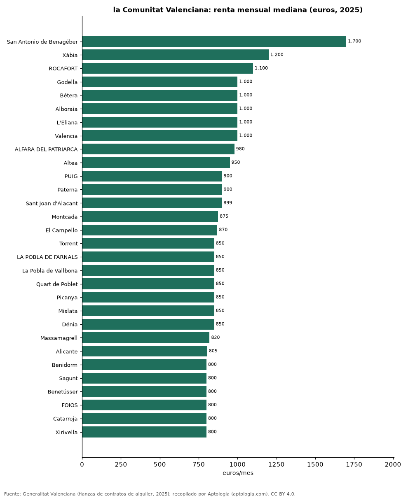

Alquiler por municipio en la Comunitat Valenciana: los más caros y los más baratos según los contratos de 2025
Estudio con datos abiertos (CC BY 4.0). Versión original: https://github.com/elbroker/aptologia-datos/tree/main/estudios/alquiler-por-municipio-comunitat-valenciana-2025 · DOI: 10.5281/zenodo.23471345
La renta mediana de alquiler más alta de la Comunitat Valenciana en 2025 se pagó en San Antonio de Benagéber (Valencia), con 1.700 euros al mes, y la más baja de los 119 municipios con 30 contratos o más en Utiel (Valencia), con 460 euros. En Valencia, el municipio con más contratos (11.322), la renta mediana fue de 1.000 euros al mes.
Resumen: ordenamos 119 municipios de la Comunitat Valenciana con 30 contratos de alquiler o más registrados en 2025 (33.611 contratos).
Actualizado: 18 de octubre de 2026 (datos de contratos de 2025) · Próxima actualización: mensual.

Resumen
| Indicador | Valor |
|---|---|
| Más caro | San Antonio de Benagéber: 1.700 euros |
| Más barato | Utiel: 460 euros |
| Valencia | 1.000 euros |
| Municipios | 119 |
Los 40 municipios más caros
| Municipio | Provincia | Alquiler mensual (mediana) | Contratos |
|---|---|---|---|
| San Antonio de Benagéber | Valencia | 1.700 euros | 37 |
| Xàbia | Alicante | 1.200 euros | 86 |
| ROCAFORT | Valencia | 1.100 euros | 58 |
| Godella | Valencia | 1.000 euros | 106 |
| Bétera | Valencia | 1.000 euros | 174 |
| Alboraia | Valencia | 1.000 euros | 298 |
| L'Eliana | Valencia | 1.000 euros | 109 |
| Valencia | Valencia | 1.000 euros | 11.322 |
| ALFARA DEL PATRIARCA | Valencia | 980 euros | 72 |
| Altea | Alicante | 950 euros | 57 |
| PUIG | Valencia | 900 euros | 102 |
| Paterna | Valencia | 900 euros | 584 |
| Sant Joan d'Alacant | Alicante | 899 euros | 141 |
| Montcada | Valencia | 875 euros | 245 |
| El Campello | Alicante | 870 euros | 151 |
| Torrent | Valencia | 850 euros | 725 |
| LA POBLA DE FARNALS | Valencia | 850 euros | 154 |
| La Pobla de Vallbona | Valencia | 850 euros | 150 |
| Quart de Poblet | Valencia | 850 euros | 253 |
| Picanya | Valencia | 850 euros | 98 |
| Mislata | Valencia | 850 euros | 361 |
| Dénia | Alicante | 850 euros | 156 |
| Massamagrell | Valencia | 820 euros | 135 |
| Alicante | Alicante | 805 euros | 2.086 |
| Benidorm | Alicante | 800 euros | 240 |
| Sagunt | Valencia | 800 euros | 644 |
| Benetússer | Valencia | 800 euros | 160 |
| FOIOS | Valencia | 800 euros | 67 |
| Catarroja | Valencia | 800 euros | 287 |
| Xirivella | Valencia | 800 euros | 201 |
| CANET D'EN BERENGUER | Valencia | 800 euros | 134 |
| Burjassot | Valencia | 800 euros | 504 |
| Sedaví | Valencia | 800 euros | 88 |
| RAFELBUÑOL | Valencia | 800 euros | 83 |
| TAVERNES BLANQUES | Valencia | 800 euros | 69 |
| Puçol | Valencia | 800 euros | 228 |
| Manises | Valencia | 800 euros | 219 |
| Paiporta | Valencia | 800 euros | 313 |
| Silla | Valencia | 795 euros | 158 |
| Riba-roja de Túria | Valencia | 790 euros | 118 |
Renta mensual mediana de los contratos de alquiler de vivienda registrados en 2025.
Los 15 municipios más baratos
| Municipio | Provincia | Alquiler mensual (mediana) | Contratos |
|---|---|---|---|
| Utiel | Valencia | 460 euros | 62 |
| L'Alcora | Castellón | 465 euros | 91 |
| CABANES | Castellón | 480 euros | 33 |
| Benicarló | Castellón | 500 euros | 178 |
| ALCALA DE CHIVERT | Castellón | 500 euros | 47 |
| Villena | Alicante | 500 euros | 52 |
| TORREBLANCA | Castellón | 500 euros | 34 |
| ONIL | Alicante | 500 euros | 30 |
| Requena | Valencia | 500 euros | 143 |
| Onda | Castellón | 500 euros | 228 |
| SEGORBE | Castellón | 500 euros | 55 |
| Ibi | Alicante | 520 euros | 35 |
| Alcoy | Alicante | 525 euros | 429 |
| Ontinyent | Valencia | 550 euros | 221 |
| BORRIOL | Castellón | 550 euros | 48 |
Preguntas frecuentes
¿Cuál es el municipio con el alquiler más caro de la Comunitat Valenciana? San Antonio de Benagéber, con 1.700 euros al mes de renta mediana en 2025.
¿Cuánto cuesta alquilar en Valencia? 1.000 euros al mes de renta mediana en los contratos de 2025.
Metodología
- Fuente: Generalitat Valenciana (fianzas de contratos de alquiler, 2025). Las tablas oficiales se tomaron de los exportes nocturnos de Aptología del 18 de octubre de 2026 (es_alquiler_municipio, es_alquiler_barrio, es_compra_municipio), que las recopilan sin modificarlas.
- Estadístico: renta mediana mensual por contrato; año 2025 completo.
- Qué se mide: rentas de contratos registrados (fianzas) o valores de tasación oficiales, no precios pedidos en portales.
- Muestra mínima: solo se publican filas con 30 contratos o tasaciones o más.
- Limitaciones: cada fuente usa su propia metodología (media en Cataluña, mediana en la Comunitat Valenciana), por lo que no deben compararse entre sí sin cautela.
- Datos abiertos: datos.csv, licencia CC BY 4.0.
Cómo citar
Pinzón Pineda, D. M. (2026). Alquiler por municipio en la Comunitat Valenciana: los más caros y los más baratos según los contratos de 2025. Aptología (aptologia.com). https://github.com/elbroker/aptologia-datos/tree/main/estudios/alquiler-por-municipio-comunitat-valenciana-2025. Datos: datos.csv, licencia CC BY 4.0.